The Cluster Scorecard view provides a summary of the vital statistics of the cluster as well as an initial visualization of the pattern that was formed by the order and fill messages that comprised the cluster. You can laos view the activity in the cluster in the context of the market data at the time.
Clicking the Inspect button in the Actions column of the Cluster List View opens the scorecard for the selected cluster.
The Cluster Scorecard is organized into the following sections.
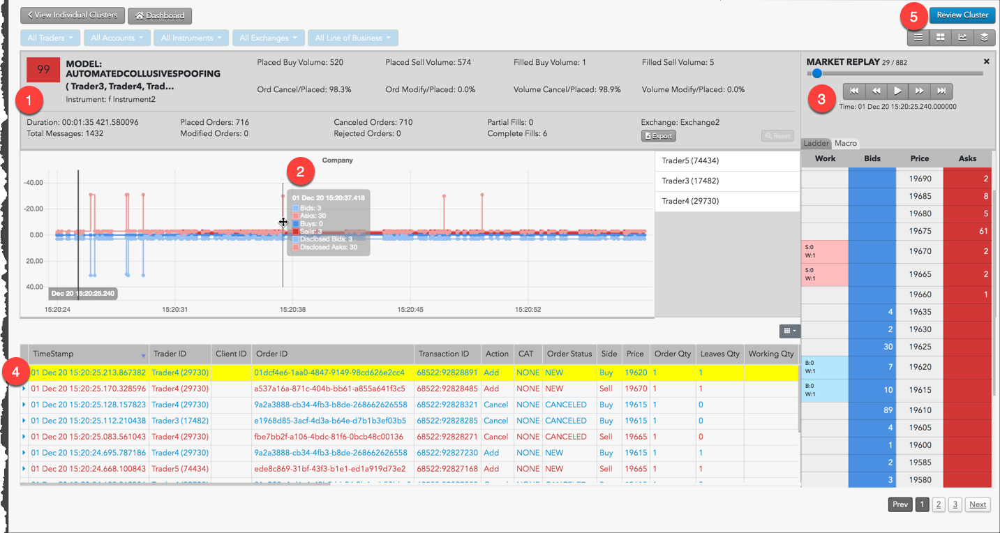Sections include:
The Cluster Statistics and Scorecard Metrics sections provide general information about the cluster as well as model-specific details.
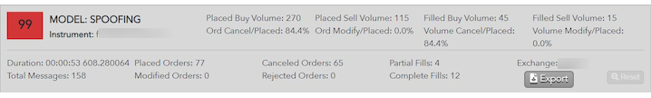The lower part of the Cluster Statistics section includes summary details about the cluster:
The Scorecard Metrics section shows model-specific information. The metrics listed are unique to each of the following models:
The Spoofing chart shows the buys and sells (working and filled) along with Iceberg (disclosed) volume and markers when the trader is flipping the market.
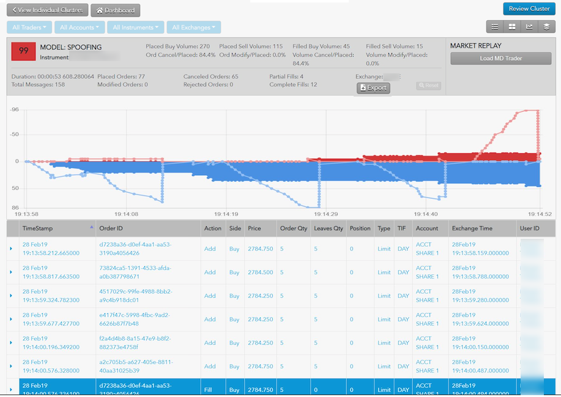You can hover the mouse over a spot the chart to view the trading details in the audit trail.
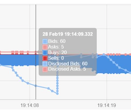This section shows the actual order actions from the audit trail with some minor normalization of things like Order Type, Side and Order Action. Rows are color coded by action and side. Click the column selector (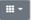) above the audit trail to show additional columns.
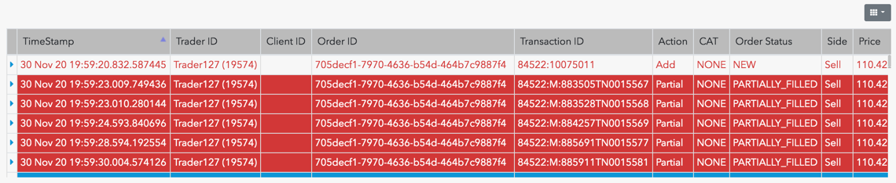Audit fields are described in the following table.
| Field | Description |
|---|---|
| Timestamp | Date and time the order was submitted. |
| Order ID | Unique TT order ID for internal tracking. |
| Transaction ID | The transaction identifier generated by and received from the Exchange. |
| Action | Type of order or fill action on the execution report. |
| Side | The side of trade (Buy or Sell). |
| Price | Order price |
| Order Qty | Order quantity |
| Leaves Qty | Remaining order quantity |
| Position | The user's position. Positive numbers indicate a long position. Negative numbers indicate a short position. |
| Type | The order type. Supported order types vary by exchange. |
| TIF | The order Time-In-Force restriction. Supported TIFs vary by exchange. |
| Account | Account ID associated with the order. |
| Exchanges Time | For messages going to the exchange, this represents when the message is sent to the exchange from the order server. For messages received from the exchange, this represents when the message is sent from the order server to the rest of the TT platform. |
| Exch ID | Exchange defined execution identifier. |
| Order ID | Unique TT order ID for internal tracking. |
| User ID | The TT platform user identifier. |
| CAT | Crossing Action Type |
| Modifier | The modifier applied to the order. Example: Stop, If Touched, Trailing Stop, Trailing IT, Trailing Limit, Machine Gun |
| Order Status | State of the order on the execution report. |
| Working Quantity | The total order quantity working in the market. |
| Modifier | The modifier applied to the order. Example: Stop, If Touched, Trailing Stop, Trailing IT, Trailing Limit, Machine Gun |
| Agressorindicator | Indicates an aggressive order: true or false. |
| Parent ID | Parent order identifier. |
| CustOrderCapacity/td> | The FIX Tag 1031 value on the order message. |
| ManualOrderIndicator/td> | Indication of manual or automated order entry. Sent to the exchange in FIX Tag 1028. |
| AvgPx | Average price of the filled order. |
| BrokerId | Identifier of the broker submitting the order. |
| RefreshQty | The amount to refresh the displayed quantity at the exchange, typically set on Iceberg orders. |
| Source | Shows where the order originated from. |
| TrdMatchId | The user's trade match prevention identifier. |
| Exec Type | Type of order or fill action on the execution report. |
| DisplayQty | The amount of the order to be publicly displayed at the exchange, typically set on iceberg orders. |
| LastQty | The amount filled on the order. |
| CumQty | The total quantity filled. |
| MinQty | The minimum quantity to be executed. |
| TradeType | The type of trade submitted. |
| AlgoId | For TT synthetic and algorithm orders, the identifier of the algorithm controlling the order. |
| CrossId | Self match prevention identifier provided by the exchange. |
| CurrUserId | identifier of the user who last touched an orders. |
| ExecInst | Execution instruction. |
| StopPx | Price at which price-triggered orders were executed. |
| SenderSubId | Identifier of the user submitting the trade. Value of FIX Tag 50. |
| AccountOverride | Account sent to the exchange as the clearing account. |
| EchoDc1 | Customer-defined text field that can be populated by FIX client applications. The value is not sent to the exchange, but remains visible in TT. |
| EchoDc10 | Customer-defined text field that can be populated by FIX client applications. The value is not sent to the exchange, but remains visible in TT. |
| EchoDc2 | Customer-defined text field that can be populated by FIX client applications. The value is not sent to the exchange, but remains visible in TT. |
| EchoDc3 | Customer-defined text field that can be populated by FIX client applications. The value is not sent to the exchange, but remains visible in TT. |
| EchoDc4 | Customer-defined text field that can be populated by FIX client applications. The value is not sent to the exchange, but remains visible in TT. |
| EchoDc5 | Customer-defined text field that can be populated by FIX client applications. The value is not sent to the exchange, but remains visible in TT. |
| EchoDc6 | Customer-defined text field that can be populated by FIX client applications. The value is not sent to the exchange, but remains visible in TT. |
| EchoDc7 | Customer-defined text field that can be populated by FIX client applications. The value is not sent to the exchange, but remains visible in TT. |
| EchoDc8 | Customer-defined text field that can be populated by FIX client applications. The value is not sent to the exchange, but remains visible in TT. |
| EchoDc9 | Customer-defined text field that can be populated by FIX client applications. The value is not sent to the exchange, but remains visible in TT. |
| Giveup | The giveup party account. |
| LastPx | Price of this fill. |
| LegCumQty | The total quantity filled for the leg. |
| OmaParentOrderId | Unique TT Order ID for an OMA parent order. |
| OrdRejReason | Reason the order was rejected at the exchange. |
| OrderOrigination | Identifies the origin of the order. |
| OrderSequence | Order message sequence number. |
| SecondaryExecId | Unique TT execution ID for the execution type. |
| SecondaryOrderId | Identifier for the party accepting the order. |
| SyntheticType | Type of synthetic parent order. |
| TextA | Optional, user-defined text value. Remains on the order in the TT system. |
| TextB | Optional, user-defined text value. Remains on the order in the TT system. |
| TextC | Read-only, customer-defined text value set by FIX client applications. The value is not sent to the exchange. |
| Text | Optional, user-defined text value. Remains on submitted orders for tracking purposes in the TT system, but is not routed to the exchange. |
You can view the life cycle of a selected order in your cluster by clicking an order event row in the Audit Messages section. The order history appears under displays beneath the selected order.
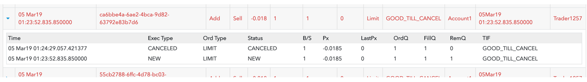
This order history includes the following columns:
| Field | Description |
|---|---|
| Time | Date and time the order was submitted. |
| Exch | Exchange defined execution identifier. |
| Exec Type | Type of order or fill action on the execution report. |
| Order Type | The order type. Supported order types vary by exchange. |
| Order Status | The order status at the exchange. |
| Order ID | Unique TT order ID for internal tracking. |
| B/S | The side of trade (Buy or Sell). |
| Price | The order price. |
| Last Price | The last traded price. |
| OrdQty | Order quantity |
| FillQty | Filled Order quantity |
| RemQty | Remaining order quantity |
| TIF | The order Time-In-Force restriction. Supported TIFs vary by exchange. |
| Acct | Account used to submit the order. |
The Market Replay section of the Cluster Scorecard lets users view the cluster data overlaid on the market data as it occurred over time. Click Load MD Trader to display the market replay ladder and playback controls.
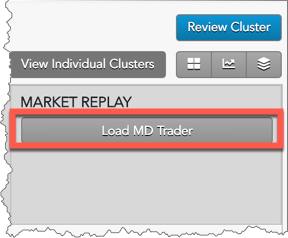
Users can display the replay data with the following views:
The Ladder view is a research tool that provides users with a frame-by-frame replay of the trading activity overlaid with Level 2 market data on a ladder-style interface. The ladder is 10 ticks deep and displays all market data, including the orders for each relevant participant in the order book. Users can stop, start and rewind the playback of the activity within a given cluster in order to gain a precise understanding of the sequence of events that occurred in the order book and how the trader’s orders impacted the market.
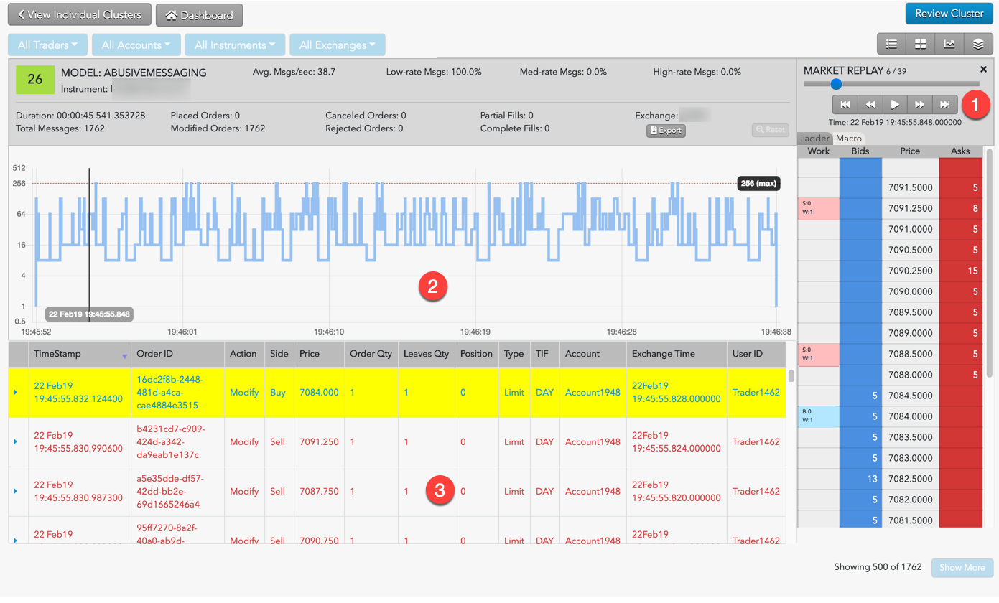
The ladder view includes the following:
Click Play to watch the market react as the order activity in the audit messages are replayed. As the market replays, a vertical bar tracks the progress in the graph and the audit messages are added as they occur. The Audit Message section lists the history of every audit message generated from the start of the replay to the current point in time of the market replay. You can start, stop and rewind the activity to help get a clearer picture of potentially problematic trading activity.
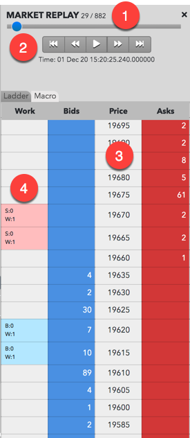
The market replay includes the following:
When working orders are shown in the market replay, the corresponding cell in the working orders Work column contains abbreviations and colors to assist you in tracking and managing your working orders. The text and colors vary based on order type and order status. Refer to the following table for a description of the abbreviations and colors that appear in the working orders column.
|
Work Column Display |
Description |
|---|---|
|
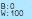 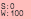 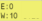 |
Appears for working buy or sell orders. The cell is highlighted blue for buy orders, red for sell orders or yellow when the price level contains both buy and sell orders. Abbreviations include:
|
|
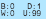 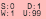 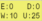 |
Appears when TT order types (e.g., TT Time Sliced) or native order types (Iceberg) with disclosed and undisclosed quantities were submitted. The cell is highlighted blue for buy orders, red for sell orders or yellow when the price level contains both buy and sell orders. Abbreviations include:
|
The Macro View is a visualization that displays a trader's order actions and executions in the context of market conditions at multiple price levels over time. This view is used to conduct a cluster review by allowing for a rapid assessment of the trader’s pattern of activity and any corresponding market reaction.
Note: You must load the market data in the MARKET REPLAY section before you can display the Macro View tab.
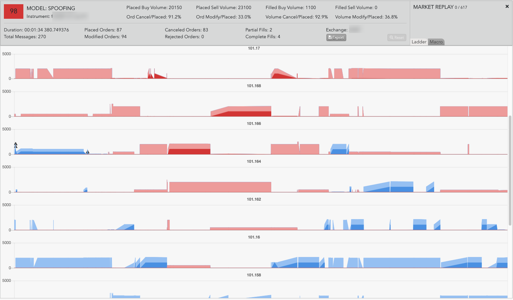
The Macro View display shows the change in the available liquidity at each price level over time. Each row represents a price level and displays the following:
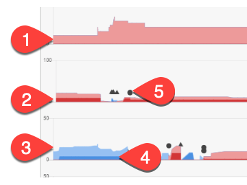
The Macro View also contains a legend that describes the color scheme. You can click the colors to hide or show the corresponding data in the Macro View.
By hovering the mouse on a specific data point, you can see the exact value at that time. For example, by hovering over a light blue area, you can see the exact bid liquidity in the market at that point in time.
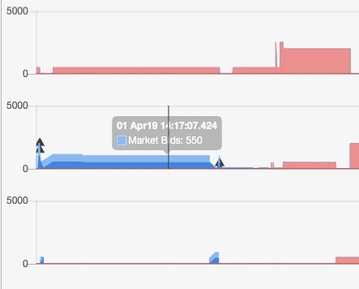
The scorecard contains a Review button that launches the Review Sidebar for recording dispositions, viewing disposition history, and opening investigations.
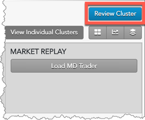
From within the Review Sidebar you can: